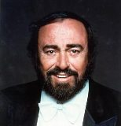

|  |
Luciano Pavarotti (12 Ekim 1935, Modena - 6 Eylül 2007, Modena), İtalyan tenor. Modern opera dönemindeki en önemli ses sanatçılarındandır.
1935 yılında İtalya'nın Modena şehrinde doğdu. İlk müzik deneyimini şehrindeki koroda, babası Fernando ile yaşadı.